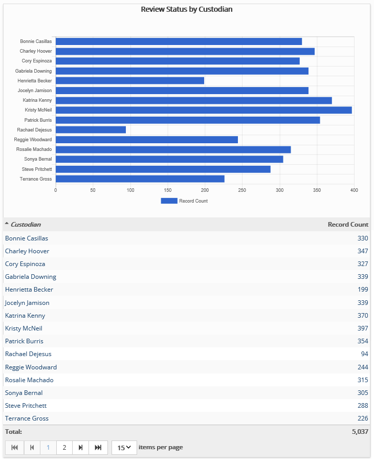

This report presents review status of documents in a particular review pass, sorted by a field selected by your administrator that contains custodian details. Tag details may also be included if configured by your administrator.
Complete the following selections:
Report Title: A report title is selected by default; change the title if needed.
Review Pass: Select the review pass of interest.
Field Definition: Select the field upon which the report should be organized, typically the custodian field.
